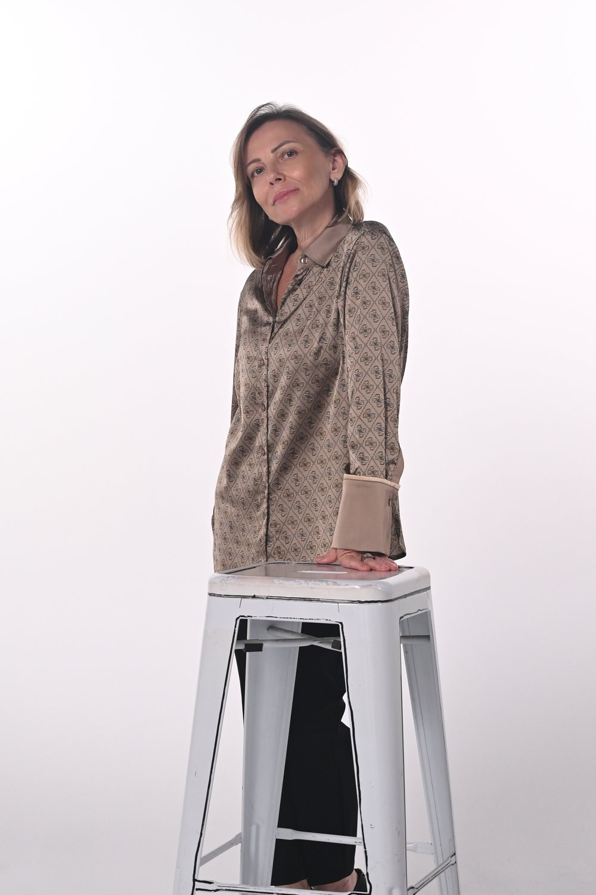
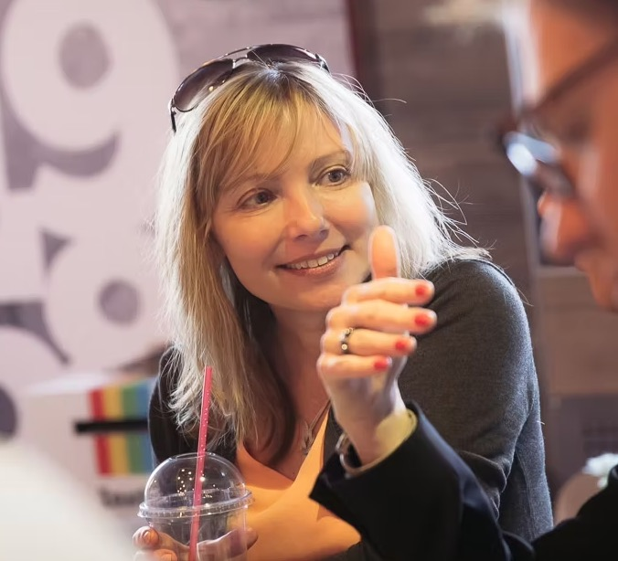

Перезапуск и рост бренда
Стратегия перезапуска KFC Israel и развитие сети с последующим масштабированием подхода на другие рынки.
Помогаю бизнесу находить и реализовывать стратегию коммерческого роста.
В личных и профессиональных переходах — увидеть следующий этап и найти свой способ в него войти.
Соединяю коммерческую стратегию и понимание человека — как разные уровни одной системы.
Помогаю бизнесу находить и реализовывать стратегию коммерческого роста.
В личных и профессиональных переходах — увидеть следующий этап и найти свой способ в него войти.
Соединяю коммерческую стратегию и понимание человека — как разные уровни одной системы.
Обо мне
Более 20 лет я работала в международном бизнесе и стратегическом маркетинге: развивала бренды и рынки, выстраивала маркетинговые функции, работала с собственниками, руководителями и франчайзи.
Постепенно мой профессиональный интерес расширился: от того, как устроены рынки и компании, — к тому, как устроен человек, принимающий решения и создающий эти системы.
В моей работе соединяются экономика, MBA, психология, стратегический маркетинг и инструменты понимания природы человека — как разные уровни одного системного взгляда.
Направления
Я работаю и с бизнесом, и с человеком — там, где прежний способ больше не обеспечивает движение вперёд и необходимо выстроить следующий этап.
Для бизнеса
Для компаний и предпринимателей, которым необходимо найти новые возможности роста и превратить их в работающую коммерческую систему.
РезультатЯсная стратегия и коммерческая система, способная поддерживать рост.Личные консультации
Для людей и команд в точке личного или профессионального перехода, которым важно понять, как жить и действовать дальше — в соответствии с собой и реальностью своей жизни.
РезультатПонимание следующего этапа и своего способа в него войти.Для бизнеса
Моя роль — увидеть коммерческую систему целиком, определить ключевую точку роста и помочь превратить стратегию в работающую модель.
Моя цель — увидеть, где именно находится возможность роста всей коммерческой системы
Я подключаюсь, когда необходимо:
Стратегия перезапуска KFC Israel и развитие сети с последующим масштабированием подхода на другие рынки.
Работа с брендами и франчайзи на 24 рынках: стратегия, портфель, ценообразование, инновации и выход на новые рынки.
Работа с собственниками и руководителями там, где необходимо пересобрать стратегию, роли, решения и способ движения вперед.
Личные консультации
«Доверяя своей природе» — индивидуальная работа для человека, которому важно понять, каким может быть следующий этап его жизни и как войти в него своим способом.

Особенно важно, когда:
Я вхожу через мышление и восприятие, но рассматриваю человека целиком: его внутренние опоры, роль, среду, ресурс и реальную жизненную ситуацию.
Результат
Более ясное понимание себя, следующего этапа и способа действовать, который действительно может стать вашим.
Особое внимание
Переходы второй половины жизни: новая профессиональная роль, качество жизни, ресурсность, среда, отношения — все, чем могут быть наполнены следующие 15–20 лет.

Биография
20+ лет в международном бизнесе.
Руководство маркетингом, рост, масштабирование и адаптация брендов в разных странах, построение эффективных команд.
KFC, Pizza Hut, International Paper.
Я пишу о стратегическом маркетинге, лидерстве и человеческом факторе. О мышлении, восприятии и внутренних опорах. О среде, красоте мира и качестве жизни.
Приглашение
Если вы хотите обсудить задачу бизнеса, личный или профессиональный переход, напишите мне.
На первой встрече мы проясним ваш контекст, главный вопрос и поймём, могу ли я быть вам полезна.